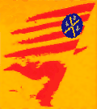
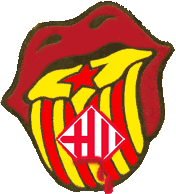
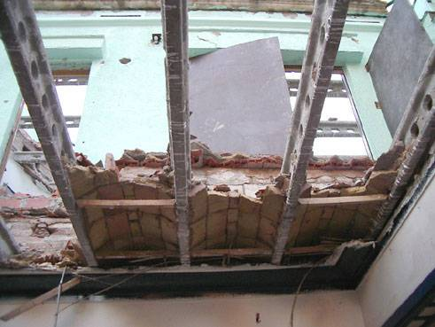
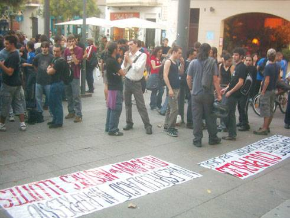
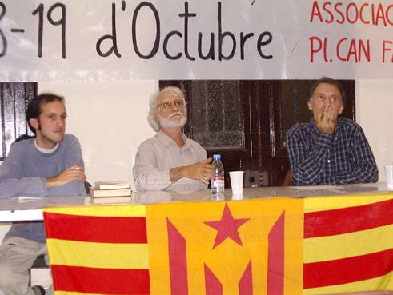
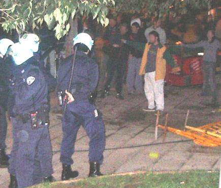
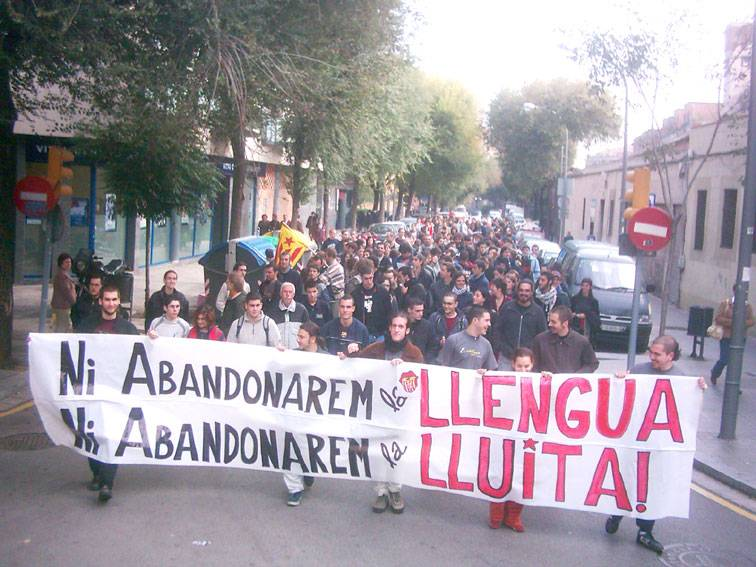

|  |  correllengua 2003 Sant Andreu de Palomar |

|  |  |  |  |  |  |
al concert del Correllengua
|
- pel que fa al permís del concert, després d’haver pactat com a hora final la 1 de la matinada 16 dies abans, l’Assemblea del Correllengua és citada 3 dies abans del concert i se li comunica que només té permís fins les 12h, amb marge fins les 12:30h de la nit. Mitjançant altres gestions posteriors, s’aconsegueix que l’hora d'acabament del concert oscil·li entre 2/4 d’1 i la 1, en base al marge de tolerància de mitja hora a partir del permís oficial que es concedia. - respecte l’entarimat, mentre que se’n demanava un de 8x8 metres, aquest es va denegar sense cap argument i se’n va donar un de 7x7, després l’oferta inicial de 6x6; d’altra banda, i per als mateixos dies, per a una activitat d’iniciativa privada a la Plaça Orfila (davant de la seu del Districte) se’n va concedir un de molt més gran. Aquests dos punts responen a la política de l’Ajuntament del Districte de no cedir la Plaça de Can Fabra a entitats que no estiguin directament vinculades a aquest. És per aquest motiu que “s’oferia” una plaça fora del barri i molt allunyada del centre neuràlgic del nostre poble. Aquesta postura de l’Administració no s’ha fet pública, sinó que les diverses entitats que sol·liciten l’ús d’aquesta plaça en són assebentades poques hores abans de la realització de l’acte, impossibilitant així qualsevol iniciativa popular. D’altra banda, dues setmanes enrere havia estat enderrocat sense previ avís el Casal Popular Onze de Setembre, amb la connivència de l’Ajuntament per inhibició de la Guàrdia Urbana, destruïnt així l’única infrastructura de què disposava l’assemblea organitzadora, i on s’havien de realitzar diverses activitats en pro del finançament del Correllengua. Quedaren sepultats sota les runes gran part del material de la parada així com tots els útils per realitzar les activitats. D’aquesta manera, el concert, essent ja l’acte més massiu que hi havia programat, es convertia en l’única font de finançament, posant en perill la continuació del Correllengua al nostre poble, si aquest patia algun desgavell important. La presència d’elements feixistes que realitzaren algunes destrosses i agressions personals pels voltants del concert no va suscitar l’aparició de la Guàrdia Urbana (GU). En canvi, sí que ho feren poc abans de les 12h, i amb una suposada ordre amb data del dia anterior (17 d’octubre) que anul·lava qualsevol ordre anterior. No obstant, es negaren a mostrar-la a l’organització quan aquesta els ho va requerir intentant fer valer l’acord aconseguit amb el Districte. la resposta de la GU fou la identificació de la persona que havia sol·licitat el permís pel concert, així com l’amenaça de tallar el subministrament de llum a les 12:30 h si no ho feia la pròpia organització, i l’amenaça de l’actuació dels antiavalots. A les 12:55h, quan el darrer grup estava a punt de finalitzar el concert que s’havia desenvolupat amb total normalitat i gran festivitat, i encara dins el marge d’horari concedit, els antiavalots de les 3 furgonetes allí presents van començar a carregar indiscriminadament contra els participants de l’acte que s’havien concentrat davant del punt de llum, tot volent-ne evitar la seva desconnexió. El resultat fou que diverses persones foren ferides de diversa gravetat, ja que la GU colpejà durament amb les porres i usà esprais de gas lacrimogen. L’agressió d’aquest cos no cessà fins que la resposta popular els feu retrocedir, tot i que no havien ni intentat desconnectar el punt de llum; és a dir, la seva única intenció era rebentar el concert i reprimir la gent que en participava. Com a denúncia i condemna dels fets ocorreguts, volem senyalar-ne com a responsables a Jordi Hereu (PSOE), regidor del Districte de Sant Andreu, i Joan Pallarès-Personat (ERC), regidor de Cultura. Per acabar, volem destacar i agrair la bona resposta de la gent davant l’agressió de la Guàrdia Urbana i el suport de l’Associació de Veïns/es en les negociacions per dur a terme el concert d’una forma cívica i consensuada, així com el de les diverses entitats i comerços que d’una forma o altra han fet possible el Correllengua d’enguany. Cal
afegir que la persona que va demanar els permisos ha estat citada a declarar a
la Comissaria de la Policia Nacional i se l'ha informat que la Guàrdia Urbana
ha posat una denúncia contra ella com a representant de l'organització de l'acte
per desordres públics. La denúncia, que no s'ha pogut veure, serà tramesa als
jutjats i seguirà el seu curs. |